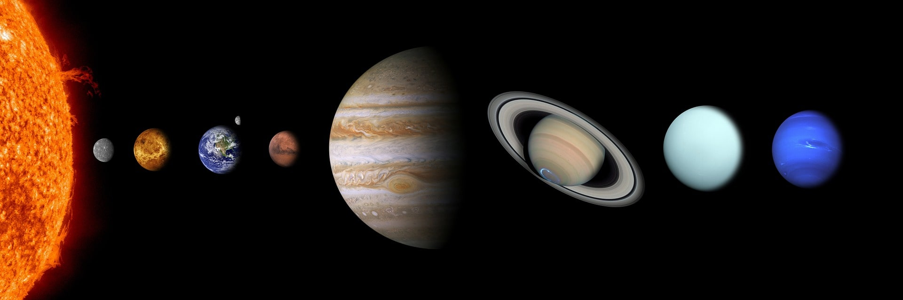
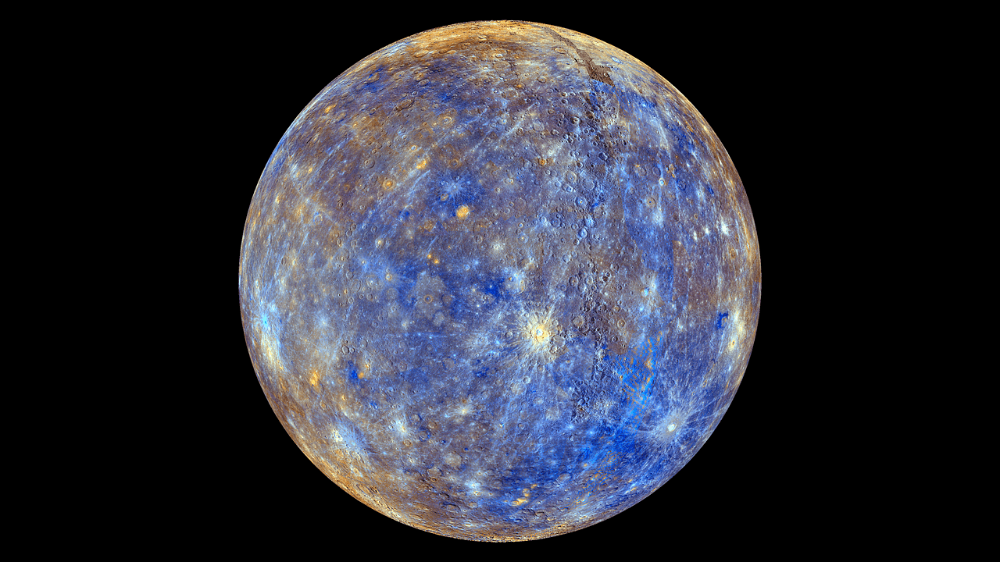
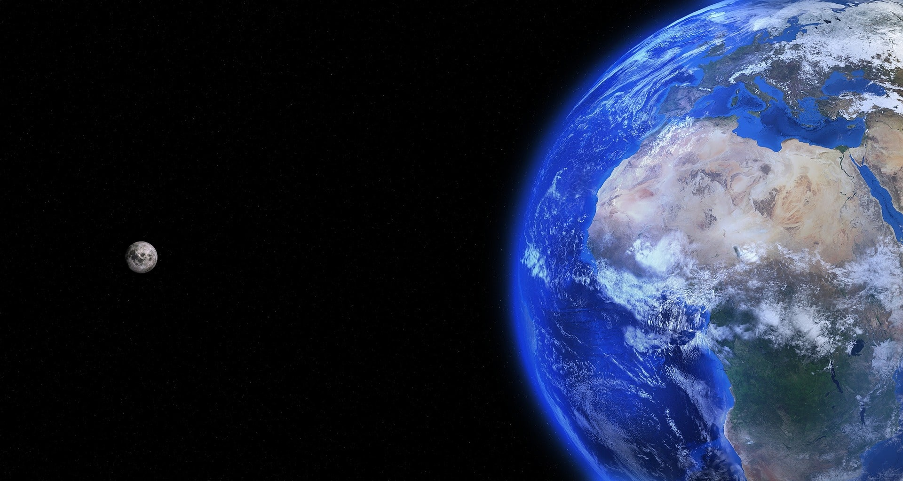
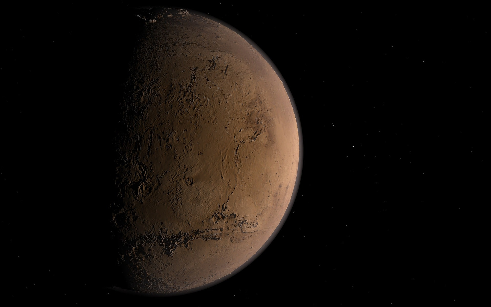
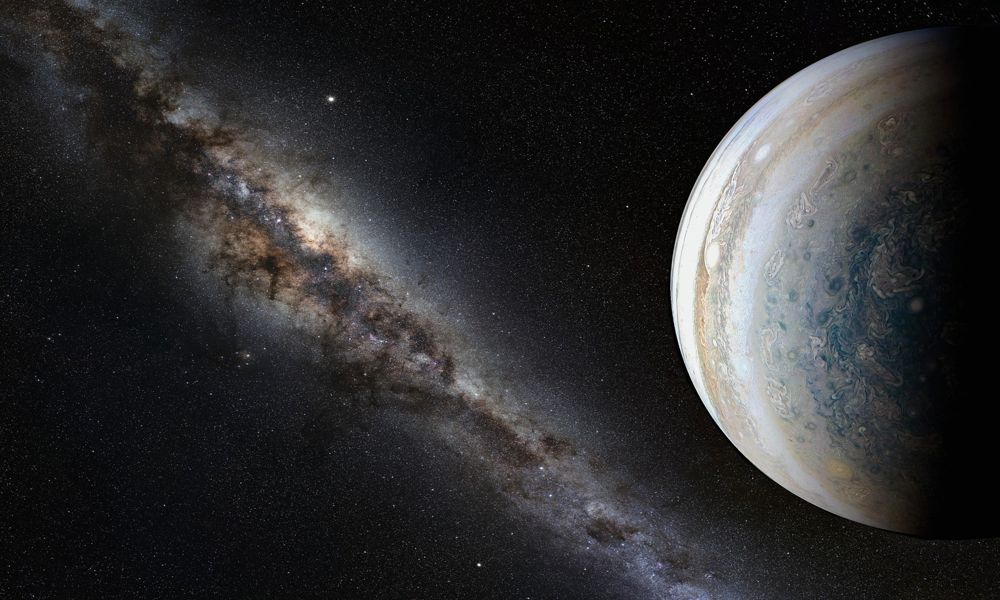
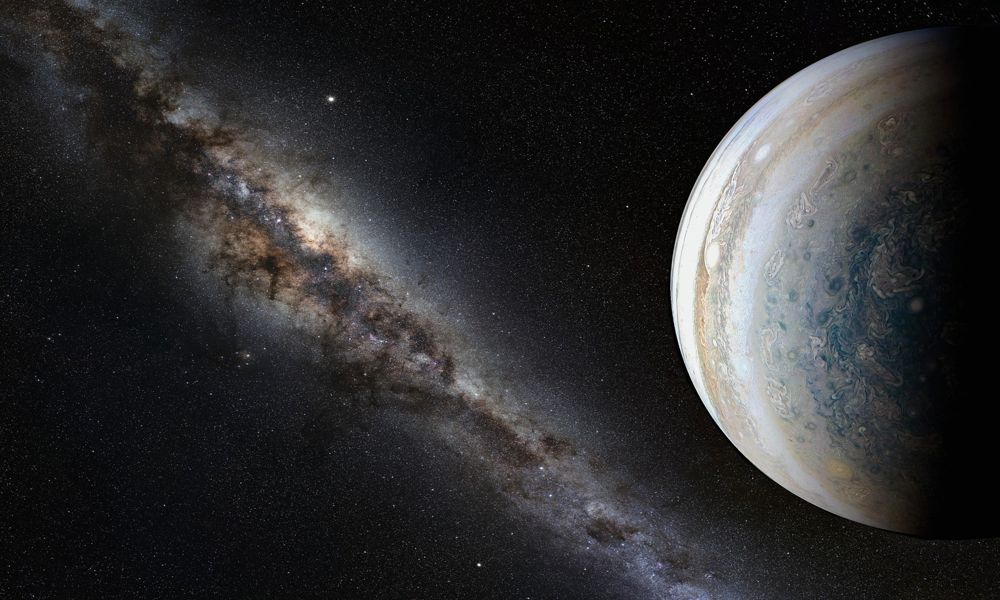
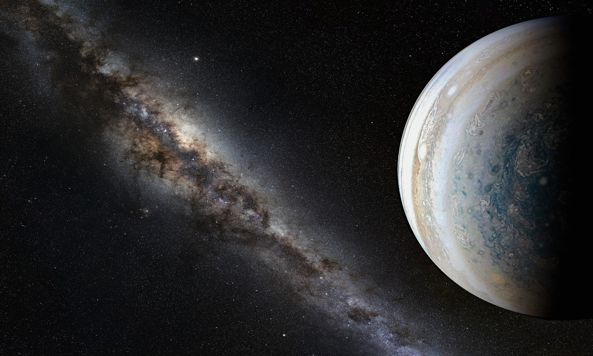

Our solar system is filled with a wide assortment of celestial bodies -
the Sun itself, our eight planets, dwarf planets, and asteroids - and on Earth, life itself!
The inner solar system is occasionally visited by comets that loop in from the outer reaches of the solar system on highly elliptical orbits.
In the outer reaches of the solar system, we find the Kuiper Belt and the Oort cloud.
Still farther out, we eventually reach the limits of the heliosphere,
where the outer reaches of the solar system interact with interstellar space.
Solar system formation began billions of years ago, when gases and dust began to come together to form the Sun,
planets, and other bodies of the solar system.
Solar System 101 | National Geographic
The Solar System Song

SUN
The Sun is the closest star to Earth and is the center of our solar system.
A giant, spinning ball of very hot gas, the Sun is fueled by nuclear fusion reactions.
The light from the Sun heats our planet and makes life possible.
The Sun is also an active star that displays sunspots, solar flares, erupting prominences,
and coronal mass ejections. These phenomena, which are all related to the Sun's magnetic field,
impact our near-Earth space environment and determine our "space weather".
In about five billion years, the Sun will evolve into a Red Giant, and eventually,
a White Dwarf star. Many cultures have had interesting myths about the Sun,
in recognition of its importance to life on Earth.
MERCURY
Mercury, the innermost planet of the solar system, is also the smallest planet in the Solar System.
It is a little bigger than the Earth's Moon.
The surface of the planet is covered with craters, like the Moon,
but temperatures there can reach over 800oF because Mercury is so close to the Sun and rotates so slowly.
This tiny planet does not have any rings or moons. Mercury has almost no atmosphere.
The planet's small size means that its gravity is too weak to hold down a normal atmosphere.
There is a very thin atmosphere around the planet.

VENUS
Fair but inhospitable Venus,
a "Sister" planet to the Earth that is very different from our home. Venus does not have any moons or rings.
Venus is the second planet from the Sun, and is Earth's closest neighbor in the solar system.
Venus is the brightest object in the sky after the Sun and the Moon,
and sometimes looks like a bright star in the morning or evening sky.
The planet is slightly smaller than Earth, and its interior is similar to Earth.
We can't see the surface of Venus from Earth,
because it is covered with thick clouds that strongly reflect sunlight.
EARTH
Earth, our home planet, is a beautiful blue and white ball when seen from space.
The third planet from the Sun, it is the largest of the inner planets.
Earth is the only planet known to support life and to have liquid water at the surface.
Earth has a substantial atmosphere and magnetic field, both of which are critical for sustaining life on Earth.
Earth is the innermost planet in the solar system with a natural satellite – our Moon.
Explore our beautiful home planet – unique in our solar system - through the links in this section.

MARS
Mars, Earth's outer neighbor, is the fourth planet from the Sun.
Mars' bright appearance and reddish color stand out in the night sky.
Impressive surface features such as enormous volcanoes and valleys
are frequently obscured by huge dust storms. The uniquely red global surface
of Mars is marked by many interesting features - some like those on the Earth and others strangely different.
The reddish color is caused by rust (iron oxide) in the soil.
Some of these features are; volcanoes, canyon systems, river beds, cratered terrain, and dune fields.

JUPITER
Jupiter is the largest planet in the solar system.
When approached from afar, its fantastic striped atmosphere gradually reveals intriguing clouds
that move around the planet.
Rich in historical and cultural connections,
Jupiter is the site of recent comet impacts and continuing scientific discovery.
The king of planets is aptly named because it not only has the most dymanic atmospheric motion,
but also the most riveting cloud patterns and storms, and the most majestic appearance of the giant planets.

SATURN
Saturn, the sixth planet from the Sun, has the most spectacular set of rings in the solar system.
We now know that Saturn has 62 moons in addition to its complex ring system.
The dramatic appearance of Saturn stems mainly from the spectacular rings.
The atmosphere looks much less dramatic.
The clouds of Saturn are much less colorful than those of Jupiter.
This is because the composition of Saturn's atmosphere includes more sulfur.
This adds to Saturn's overall yellow appearance.
When you look closely, however, Saturn's atmosphere is just as fierce as that of Jupiter!
URANUS
Uranus, the seventh planet from the Sun, has its spin axis almost in the plane of its orbit about the Sun.
This produces unusual seasons and also causes unique magnetic and electric field structures.
Uranus has a faint ring system and 27 known moons.
The planet appears to be blue-green because the methane gas of the atmosphere traps red light and does not allow
that color to escape.
NEPTUNE
Neptune, the eighth and furthest planet from the Sun, is a very cold place. Its bluish color is caused by small amounts
of methane gas in its atmosphere.
The planet has 14 moons and a very narrow, faint ring system. Neptune's atmosphere shows a striped pattern of clouds.
This cloud pattern is very similar to that of Jupiter and Saturn. Neptune even has a Great Dark Spot similar to
Jupiter's Great Red Spot. The Great Dark Spot of Neptune is thought to be a hole,
similar to the hole in the ozone layer on Earth, in the methane cloud deck of Neptune.
DWARF PLANETS
In 2006 the International Astronomical Union (IAU) approved a new classification scheme for planets and smaller objects in our Solar System.
Their scheme includes three classes of objects: "small solar system bodies" (including most asteroids and comets),
the much larger planets (including Earth, Jupiter, and so on), and the new category of in-between sized "dwarf planets".
There are currently five official dwarf planets. Pluto, formerly the smallest of the nine "traditional" planets,
was demoted to dwarf planet status. Ceres, the largest asteroid in the main asteroid belt between Mars and Jupiter,
was also declared a dwarf planet. The three other (for now!) dwarf planets are Eris, Makemake, and Haumea. Pluto, Makemake,
and Haumea orbit the Sun on the frozen fringes of our Solar System in the Kuiper Belt. Eris, also a Trans-Neptunian Object,
is even further from the Sun.


 
